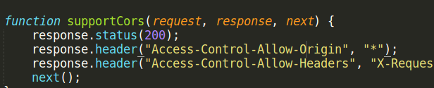
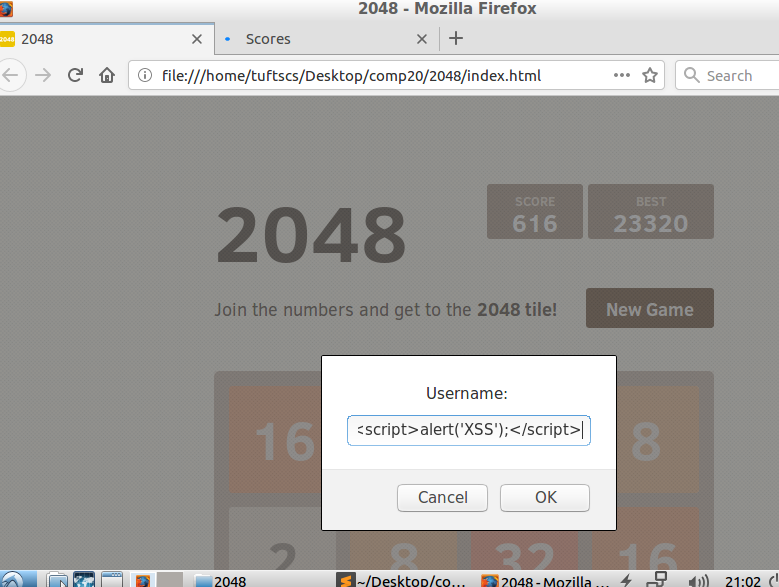
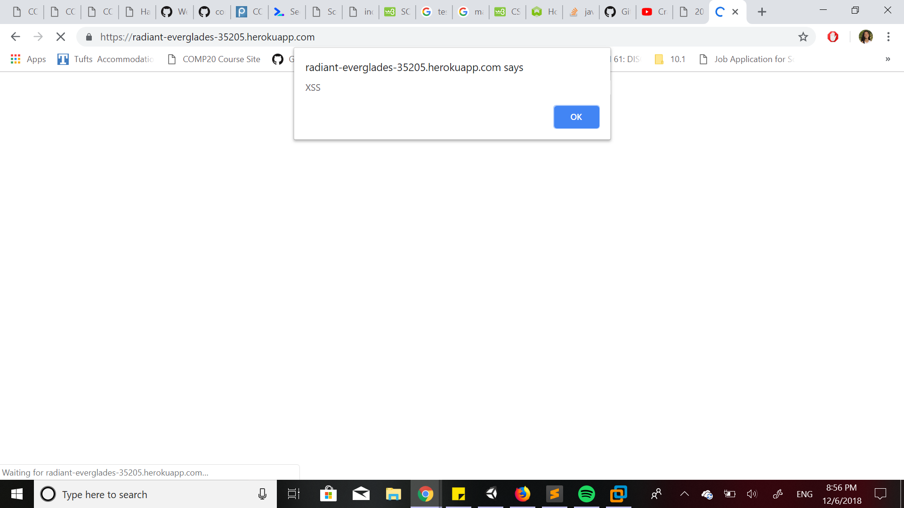

Security: 2048
Introduction:
I was assigned a 2048 application, which records users' scores in a database. I was hired as a security consultant to document and resolve the security and privacy issues in this application.
Methodology:
I viewed my partners code to check for vulnerabilities in indes.js such as CORS in order to do white box testing. I explored Burp Suite, but was not able to implement it.
Abstract of Findings:
The first issue I found was one that allows any site on the internet to access this app's resources. The second issue was the ability of any user to insert executable commands into the username input box. The third issue was
Issues Found
Issue 1: Cross Origin Resource Sharing
- Location: index.js, line 21
- Severity: HIGH - Any site can send an XHR request and access the server's response
- Description of issue: "*" is a wildcard. It gives access to any site to have cross origin.

- Proof of vulnerability. Show pictures or it didn't happen.
- Resolution: Specify which sites to give access to. Change the header to Access-Control-Allow-Origin: uri
Issue 2: Cross Site Scripting
- Location of the issue: the user input box which appears after a round of the game.
- Severity of issue: HIGH - any user can enter scripting into the username input box and mess with the HTML.
- Description of issue: XSS allows the user to enter javascript into the user input box. The server views this text as script and runs the script. I foudn this vulnerability by entering a simple script for an alert box with the text "XSS" into the username input.

- Proof of vulnerability:

- Resolution: In your code, change < to "&(remove)lt" and > to "&(remove)gt". Then the data will no longer be interpreted as code.
Conclusion:
In the future, it would be helpful to utilize security tools such as Burp. In order to gain access to more features, we may look into obtaining a license for Burp Suite Enterprise Edition, which costs $399.00.
References: